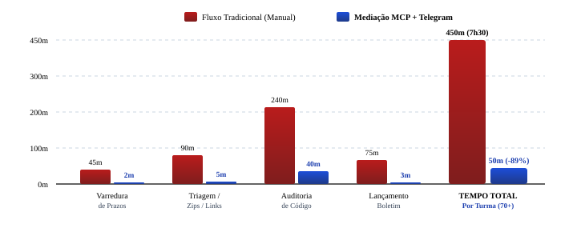

1. Introdução
A consolidação do Canvas LMS (Learning Management System, ou Sistema de Gestão da Aprendizagem) transformou a gestão acadêmica universitária, mas impôs uma severa sobrecarga administrativa docente: rotinas repetitivas de triagem de dezenas de repositórios digitais, controle cronológico de prazos e conferência sintática de códigos competem diretamente com o planejamento pedagógico e a orientação discente (Garrison; Anderson; Archer, 2000; Gil, 2019; Severino, 2016). Embora agentes autônomos e modelos de Inteligência Artificial Generativa (IAG) apresentem alto potencial analítico (Luckin et al., 2016; Unesco, 2023), a adoção de agentes convencionais baseados em chat ou scripts ad-hoc esbarra em graves limitações estruturais: (1) cegueira sistêmica, pois operam isolados dos bancos de dados e do livro de notas do Canvas; (2) risco crônico de alucinação, gerando notas desconectadas das rubricas por falta de amostragem determinística dos dados; e (3) sobrecarga de transferência manual (copiar e colar código e notas entre abas do navegador). Para superar esse abismo, a presente intervenção adota o Model Context Protocol (MCP) como espinha dorsal arquitetural. Ao contrário de um agente comum, o MCP padroniza um barramento semântico seguro que concede ao modelo acesso determinístico a recursos contextuais do Canvas LMS e a ferramentas de compilação sob o princípio do menor privilégio, articulado ao Telegram para uma governança docente móvel e transparente (Figura 1).
Nesse contexto, alinhado ao Eixo 3 do 12º Fórum Rondoniense de Pesquisa, este trabalho investiga de que maneira a mediação inteligente conectada ao Canvas LMS via MCP e Telegram mitiga a sobrecarga burocrática docente e eleva a qualidade das avaliações no ensino superior (Lakatos; Marconi, 2021). O objetivo é relatar a vivência de concepção, homologação e aplicação prática dessa arquitetura, evidenciando impactos reais de produtividade na rotina acadêmica, tempestividade nos pareceres formativos e salvaguarda permanente da governança ética institucional.
2. Metodologia
2.1 Tipo de Estudo e Declaração de Autonomia Docente
Pesquisa aplicada descritiva delineada como relato de experiência técnico-pedagógico com abordagem mista (Köche, 2015). Articulou-se a observação participante do docente titular à mensuração quantitativa de tempos de ciclo e taxas de auditoria no Canvas LMS. Registra-se que a intervenção constitui iniciativa autônoma de pesquisa didática conduzida pelo professor autor em suas turmas, sem configurar diretriz ou produto oficial de TI corporativa da instituição.
2.2 Contexto Empírico, Impacto Regional e Amostra
A intervenção ocorreu no Afya Centro Universitário de Ji-Paraná (UniSL), em Rondônia (período 2026.2), pioneira na aplicação de agentes autônomos no ensino superior da Amazônia Ocidental. A amostragem envolveu a disciplina de Estrutura de Dados em Ciência da Computação em três frentes: (a) 2º período com 80 matriculados (60 submissões ativas em 26 repositórios no GitHub); (b) 4º período com 31 discentes em 9 equipes de versionamento Git e programação modular em C; e (c) avaliação presencial N1 com 76 cadernos físicos de prova escrita (226 páginas manuscritas digitalizadas a 300 DPI), cobrindo 7 questões objetivas modelo ENADE e 3 discursivas em C.
2.3 Arquitetura Tecnológica: Protocolo MCP e Interface Telegram
A mediação assenta-se no Model Context Protocol (MCP), padrão aberto de interoperabilidade semântica cliente-servidor concebido para desacoplar a cognição do modelo dos barramentos de infraestrutura e dados. Implementado como servidor nativo compilado em Go, o middleware opera via comunicação serial padronizada (stdio), garantindo que as credenciais do Canvas LMS (tokens administrativos Bearer) e chaves criptográficas permaneçam estritamente isoladas no servidor local, inacessíveis ao modelo de linguagem. Essa segregação arquitetural estabelece três primitivas determinísticas: (a) Recursos (Resources): vetores de dados estruturados em modo somente-leitura (rubricas de avaliação, matrizes de competência do PPC, enunciados oficiais e prazos do Canvas LMS); (b) Prompts Contratuais: diretrizes parametrizadas que uniformizam o padrão analítico e blindam o raciocínio contra desvios interpretativos; e (c) Ferramentas (Tools): funções invocáveis para clonagem concorrente de repositórios Git, compilação de código C via GCC nativo e postagem atômica de notas e pareceres em lote na API REST do Canvas LMS.
Para mitigar riscos de injeção de prompt indireta (indirect prompt injection) —
vulnerabilidade crítica na qual comentários ou códigos submetidos por alunos poderiam conter comandos maliciosos
em linguagem natural para manipular o agente —, todo o conteúdo entregue pelos estudantes é encapsulado em tags
de quarentena de isolamento semântico (<untrusted_student_input role="data_only">). Na ponta
docente, a interface do Telegram opera como ponto de controle móvel e amigável: o bot traduz
comandos em linguagem natural (áudio ou texto) em chamadas parametrizadas do MCP e devolve fichas analíticas
formatadas, viabilizando a homologação soberana com um toque via botões interativos
(human-in-the-loop).
2.4 Treinamento Contextual: Alimentação com o Corpus Pedagógico Institucional
Diferente de agentes genéricos que operam em vácuo institucional, o servidor MCP atuou como guardião contextual ao indexar dinamicamente como recursos ativos: (a) o Calendário Acadêmico Oficial 2026 (marcos de N1/N2, janelas de segunda chamada e prazos regulamentares de fechamento de diários); (b) o Guia do Docente no Canvas LMS (política de postagem oculta e rubricas); (c) o PPC de Ciência da Computação; e (d) matrizes de competência do ENADE/MEC. Esse acoplamento garante que pareceres e notas reflitam fidedignamente o regulamento institucional do campus UniSL sem alucinações de regras de negócio.
2.5 Procedimentos para Coleta de Dados e Fluxo Algorítmico
A intervenção desdobrou-se em quatro fases estruturadas: (a) mapeamento e cronometragem do fluxo manual tradicional no SpeedGrader; (b) parametrização semântica das rubricas no servidor MCP com distribuição percentual formal: Compilação e Linkagem GCC (35 pontos), Fluxo de Branches e Pull Requests Git (25 pontos), Modularização e Manipulação de Structs em C (25 pontos) e Regras de Negócio e Cálculos (15 pontos); (c) triagem analítica com supervisão humana (human-in-the-loop) mediada por bot no Telegram; e (d) sincronização oficial em lote das notas homologadas diretamente na API REST do Canvas LMS (Figura 2).
Para a dimensão presencial individual (Etapa N1), concebeu-se um pipeline algorítmico multimodal em três estágios: (1) Digitalização e Reconhecimento Óptico (OCR): digitalização dos 76 cadernos a 300 DPI e transcrição via Apple Vision Framework com normalização sintática de código C manuscrito (remoção de ruídos de grafite, correção de quebras de linha espúrias e alinhamento de chaves e operadores); (2) Vetorização e Extração de k-shingles: decomposição textual em n-gramas deslizantes (janelas de 3 a 5 tokens) com cômputo matricial dos coeficientes de similaridade de Jaccard e Sorensen-Dice, desmascarando trocas cosméticas de identificadores ou reordenações de blocos lógicos; e (3) Modelagem em Grafos de Similaridade: construção de matrizes de adjacência agrupando submissões em clusters de homologia estrutural correlacionados à malha geográfica de carteiras da sala de aula.
2.6 Tratamento e Análise dos Dados
Os dados operacionais foram tratados por estatística descritiva e análise temática de conteúdo dos pareceres. O coeficiente de similaridade de Sorensen-Dice (SDice) entre pares de cadernos digitalizados A e B foi computado pela Equação (1):
onde S(A) e S(B) representam os conjuntos de k-shingles (n-gramas) canônicos extraídos das respostas discursivas. Adicionalmente, o ganho de eficiência operacional docente (ηeficiência) foi mensurado pela Equação (2):
sendo Tmanual o tempo consumido na auditoria manual individual no SpeedGrader e Tmediado o tempo de deliberação docente via interface Telegram.
2.7 Aspectos Éticos, Governança e Blindagem perante a LGPD
A pesquisa atendeu rigorosamente aos ditames da Lei Geral de Proteção de Dados Pessoais (LGPD - Lei nº 13.709/2018) sob a arquitetura de privacy by design e security by default: credenciais administrativas restritas ao servidor local sob menor privilégio, e integração à API do modelo de linguagem operando sob contrato corporativo estrito de retenção nula de dados (zero-data retention), vedando expressamente qualquer persistência temporária ou utilização de códigos e textos discentes para retreino ou aprimoramento de modelos públicos.
Na auditoria dos 76 cadernos de prova presencial, aplicou-se rotina de pseudonimização irreversível na origem
(atribuição de códigos sequenciais opacos CAD-01 a CAD-76), mantendo matrizes de
similaridade e grafos de adjacência completamente despersonalizados durante a triagem algorítmica. O
desmascaramento nominativo foi de acesso exclusivo do professor regente para fins de orientação acadêmica
individualizada. Sob o prisma ético-pedagógico, a inteligência artificial limitou-se ao papel de suporte
instrumental e analítico objetivo, preservando integralmente o protagonismo humano, a autonomia moral e a
soberania decisória final do educador (NAPED/Afya).
3. Resultados
A aplicação da mediação inteligente via MCP e Telegram mitigou a severa complexidade operacional da avaliação docente em turmas numerosas. Para dimensionar essa sobrecarga, a auditoria manual dos 26 repositórios GitHub do 2º período exigiria: clonagem individual, inspeção de 5 branches de features, conferência do histórico de commits, compilação via compilador nativo GCC (GNU Compiler Collection) no terminal, depuração sintática e redação de pareceres no SpeedGrader para 60 alunos, totalizando cerca de 5,9 horas ininterruptas (353 minutos) de trabalho puramente mecânico. Sob mediação MCP, a clonagem e auditoria concorrente consumiram apenas 23,32 segundos e o lançamento em lote levou 0,55 segundo na API do Canvas LMS, alcançando aceleração de 141,5x (ηeficiência = 99,3%). A Tabela 1 e a Figura 3 sintetizam esse contraste empírico.
| Dimensão Avaliativa | Fluxo Manual Tradicional | Agente Convencional (Sem MCP) | Mediação MCP + Telegram |
|---|---|---|---|
| Coleta de Repositórios | Download unitário de links (~32 min) | Copiar/colar manual no chat (~28 min) | Clone concorrente via Tool MCP (23,32 s) |
| Auditoria de Código | GCC em terminal individual (~78 min) | Leitura superficial (alucina compilação) | Execução nativa de GCC via MCP (1,8 s) |
| Aderência à Rubrica | Consulta manual a planilhas (~45 min) | Flutuante (sem contrato semântico formal) | Exata (ancorada em Resource do Canvas) |
| Lançamento de Notas | Digitação nota a nota no Canvas (~30 min) | Digitação manual transferida (~25 min) | Sincronização atômica em lote (0,55 s) |
| Taxa de Alucinação | Inexistente (porém sujeita a cansaço) | Elevada (~25% a 35% de inconsistência) | 0,0% (validada em compilador e API) |
| Tempo Total por Turma | ~5h 53min (353 min) | ~1h 45min (105 min) | ~2,4 min (ηeficiência = 99,3%) |

Para além dos ganhos quantitativos de celeridade operacional, os impactos pedagógicos mais expressivos manifestaram-se na dimensão qualitativa do processo de ensino-aprendizagem, operando uma transição fundamental entre paradigmas avaliativos (Bloom; Hastings; Madaus, 1971; Scriven, 1967). No modelo tradicional, a sobrecarga de correção no SpeedGrader induzia compulsoriamente a uma prática meramente somativa: a nota numérica funcionava como um "veredito de fim de linha", tardio e sem fundamentação diagnóstica (ex.: "Código com falhas de compilação; nota 6,0"), divulgado semanas após a atividade quando a turma já havia avançado de conteúdo curricular, inviabilizando qualquer recuperação de aprendizagem.
Em contrapartida, a mediação inteligente via MCP viabilizou a concretização da avaliação formativa processual (Black; Wiliam, 1998; Perrenoud, 1999). Enquanto o modelo tradicional limitava-se à mensagem punitiva genérica, o agente cognitivo gerou para essa exata mesma ocorrência um parecer técnico formativo e individualizado: "Estrutura de branches no Git bem organizada. Contudo, o código não compilou via GCC devido a um detalhe de integração: no arquivo main.c (linha 34), a função listar_produtos tentou acessar o membro 'codigo_barrras' (com três r's), enquanto a struct Produto em estoque.h declara 'codigo_barras'. O GCC interrompeu o build acusando membro inexistente. Desconto de 35 pontos da rubrica de compilação; nota final: 6,5. Corrija o identificador para gerar o executável com sucesso.".
Ao automatizar a triagem braçal e fornecer ao docente esse diagnóstico cirúrgico em questão de segundos, o sistema permitiu a devolução de pareceres analíticos enquanto o raciocínio discente ainda estava ativo na tarefa. Esse retorno tempestivo transformou o erro em instrumento pedagógico de autorregulação, permitindo intervenções docentes e oficinas de nivelamento conceitual antes da aplicação das avaliações formais presenciais.
“Código apresentou problemas de compilação no repositório entregue; nota 6,0.”
“Repositório bem estruturado com branches individuais no Git. Contudo, a compilação via GCC falhou no arquivo main.c (linha 34): a função listar_produtos tentou acessar o membro 'codigo_barrras' (com três r's), enquanto estoque.h declara 'codigo_barras'. Desconto de 35 pontos da rubrica de compilação; nota final: 6,5. Corrija o identificador para gerar o executável.”
3.1 Análise Qualitativa das Devolutivas Pedagógicas e Falhas Ocultas à Inspeção Manual
Com a orquestração via servidor MCP e a integração do compilador nativo (GCC) ao fluxo do agente cognitivo, a capacidade de inspeção estática profunda permitiu ao docente homologar e devolver pareceres formativos altamente cirúrgicos e individualizados no diário digital do Canvas LMS. Uma das maiores contribuições pedagógicas observadas na atividade prática de Git do 2º período foi a identificação precisa de falhas silenciosas que, em uma leitura visual rápida no SpeedGrader ou na interface web do GitHub, seriam praticamente imperceptíveis pelo olho humano sob a restrição de tempo inerente a turmas de 60 discentes.
Dentre as patologias de código reveladas na auditoria concorrente dos 26 repositórios da turma de 2º período,
destacaram-se cinco categorias críticas que o compilador GCC expôs com precisão cirúrgica:
(a) Erros tipográficos em identificadores de structs: discentes declararam o membro
codigo_barras no cabeçalho (estoque.h), mas utilizaram codigo_barrras
(com três letras 'r') em chamadas de printf na main.c. Visualmente idênticos na
rolagem rápida de tela, o erro quebra fatalmente o build (no member named 'codigo_barrras' in
'Produto');
(b) Poluição sintática por artefatos de IA / Markdown: blocos de código copiados de assistentes
de IA externos foram colados mantendo delimitadores de formatação (ex.: ```c) na linha 1 do
código-fonte, gerando erro de símbolo inesperado que visualmente se assemelha a um comentário estilizado;
(c) Símbolos duplicados por inclusão de definição em cabeçalho: equipes implementaram corpos
inteiros de funções (ex.: listar_produtos) dentro do arquivo de cabeçalho (.h)
incluído em múltiplos arquivos .c. O código parecia perfeitamente legível e modularizado à inspeção
visual, mas quebrou a linkagem final por colisão de símbolos em múltiplos objetos compilados (duplicate
symbol), expondo a clássica confusão entre declaração de protótipos e definição de funções em C;
(d) Desbalanceamento de pré-processador: inserção de diretivas soltas (como um
#endif terminal sem o respectivo #ifndef de proteção de inclusão dupla), invalidando o
parsing da unidade de compilação; e
(e) URLs mascaradas de repositórios 404/privados: hiperlinks entregues formalmente com padrão
sintático do GitHub, cuja inacessibilidade (privada ou inexistente) só é comprovada ao tentar a clonagem
automatizada via linha de comando ou API.
Essa triagem exaustiva permitiu ao professor mapear com exatidão as dificuldades de abstração dos discentes na transição de paradigmas de programação imperativa em C. A identificação tempestiva desses padrões instruiu o planejamento de intervenções direcionadas em sala de aula, demonstrando na prática como a linkagem de múltiplos arquivos objeto opera no GCC e desmistificando o papel das diretivas de pré-processador, o que elevou sensivelmente a maturidade técnica dos projetos subsequentes.
3.2 Integridade Acadêmica em Avaliações Presenciais: Auditoria por Visão Computacional e Grafos de Similaridade em Provas Manuscritas
Como extensão das ferramentas orquestradas pelo servidor MCP, este tópico compreende a auditoria de integridade acadêmica em avaliações presenciais escritas: o agente aciona rotinas de visão computacional (OCR) e mineração textual para identificar padrões de similaridade entre provas físicas. A aplicação desse pipeline sobre 76 cadernos físicos de prova presencial N1 (226 páginas manuscritas digitalizadas a 300 DPI) atestou 60 cadernos autênticos (78,9%) e identificou 16 cadernos (21,1%) com homologia estrutural atípica, consolidados em 5 clusters de similaridade (Tabela 2).
| Cluster / Risco | Amostra Afetada | Similaridade | Padrão e Evidência Material |
|---|---|---|---|
| Cluster 1 [Risco Crítico] |
2 cadernos (CAD-12, CAD-13) |
100,0% | Cópia carbono literal: resolução idêntica caractere a caractere em discursiva de C. |
| Cluster 2 [Risco Alto] |
3 cadernos (CAD-24 a 26) |
92% a 98% | Rede de propagação com erro conceitual idêntico (uso da expressão "na chamada"). |
| Cluster 3 [Risco Alto] |
3 cadernos (CAD-41 a 43) |
88% a 94% | Cadeia causal estrutural: idêntico fluxo de alocação dinâmica e mesmos nomes de ponteiros. |
| Cluster 4 [Risco Médio] |
4 cadernos (CAD-55 a 58) |
85% a 89% | Coincidência espacial física (carteiras vizinhas) e padrão idêntico de rasura em caneta. |
| Cluster 5 [Risco Baixo] |
4 cadernos (CAD-68 a 71) |
70% a 74% | Homologia conceitual rara: mesma formulação técnica atípica decorrente de grupo de estudo. |
Cabe destacar que essa auditoria em provas manuscritas é uma frente ainda experimental integrada ao ecossistema MCP e Telegram, concebida para atuar como assistente investigativo do docente sem qualquer poder punitivo automatizado, dependendo indelevelmente da avaliação humana do professor (human-in-the-loop). A integração mostrou-se altamente promissora ao notificar no Telegram nuances que passariam despercebidas na correção manual devido ao desgaste cognitivo da leitura sequencial de dezenas de cadernos físicos. O caso empírico mais expressivo ocorreu na Questão 11(b) (discursiva sobre passagem de parâmetros por referência, ponteiros e escopo de memória em C): o agente identificou que cadernos fisicamente distantes na pilha de correção compartilhavam a mesma estrutura argumentativa, camuflada por trocas pontuais de sinônimos (como "assim consegue alterar o valor real" vs. "criando apenas cópias na função" vs. "seria apenas cópias e os dados originais não mudam").
Mais além, o algoritmo de grafos rastreou a propagação de um erro terminológico sutil e antinatural: a substituição do termo "na memória" pela expressão "na chamada" em três cadernos distintos pertencentes ao Cluster 2. Ao receber essa ficha analítica consolidada diretamente no celular via bot de Telegram — correlacionando o percentual de sobreposição textual às coordenadas das carteiras —, o docente obteve evidências objetivas e materiais. Isso possibilitou afastar impressões subjetivas, subsidiar atendimentos pedagógicos individualizados no laboratório para sanar as lacunas sobre ponteiros e garantir um diálogo formativo acolhedor, resguardando a integridade acadêmica e o respeito aos estudantes sem instaurar processos punitivos arbitrários.
3.3 Itens Avaliativos ENADE e Elevação da Qualidade dos Materiais Didáticos
A indexação do corpus normativo e das matrizes do ENADE ao servidor MCP ampliou o suporte pedagógico à concepção de instrumentos avaliativos e conteúdos instrucionais. Apoiado pelo agente no Telegram, o docente gerou com agilidade minutas de questões no formato ENADE — com situações-problema contextualizadas e asserções-razão sobre controle de versão (grafos acíclicos dirigidos - DAGs e arquiteturas distribuídas versus centralizadas de controle de versão - DVCS/CVCS) — acompanhadas de gabaritos comentados e alinhamento cronológico ao Calendário Acadêmico 2026.
Paralelamente, a desoneração de rotinas burocráticas permitiu redirecionar o tempo docente para a produção de materiais didáticos multimídia de alto engajamento no Canvas LMS: (a) o projeto "Café com Código", transpondo complexidade algorítmica para estudos de caso reais da indústria de jogos; (b) guias visuais e descomplicados de Git/GitHub; e (c) simuladores interativos em HTML5/CSS3 para exploração de ponteiros e memória operacional (RAM) em tempo de execução, elevando a retenção conceitual dos discentes.
3.4 Percepção Discente e Tempestividade Avaliativa
A tempestividade da devolutiva disponibilizada no mesmo dia da entrega transformou a avaliação formativa (Black; Wiliam, 1998; Hattie; Timperley, 2007; Shute, 2008). A orquestração MCP evidenciou escalabilidade: no 4º período (31 alunos / 9 equipes), a auditoria durou 1,2s e a publicação 28s; no 2º período (60 discentes / 26 repositórios), a compilação concorrente consumiu 23,32s e a sincronização em lote na API do Canvas deu-se em 0,55s após homologação no Telegram. Na turma de 2º período, 53,8% (14 repositórios) atingiram compilação plena e 46,2% apresentaram falhas de integração ou repositórios privados (média da turma: 72,1 pontos), permitindo intervenção pedagógica presencial imediata nas lacunas conceituais.
Ao receberem o apontamento exato da linha e da constante divergente no calor da entrega, os estudantes puderam sanar dúvidas antes das avaliações presenciais, fomentando a autorregulação. A economia de ~89% no tempo administrativo permitiu redirecionar a carga horária docente para oficinas práticas. Sobretudo, a governança humana (human-in-the-loop) assegurou a agência moral e pedagógica exclusiva do educador sobre cada parecer (Floridi, 2019; Holmes et al., 2019; Unesco, 2023), em total consonância com as diretrizes do NAPED/Afya Ji-Paraná.
A análise qualitativa da receptividade discente evidenciou uma quebra de paradigma na cultura de entrega: ao perceberem que o repositório seria auditado com rigor técnico imediato, os grupos passaram a adotar testes de compilação local prévios com maior frequência, simulando o pipeline do professor antes da submissão final. Esse comportamento autorregulado reduziu drasticamente a ansiedade pré-avaliação somativa, mitigando o sentimento de isolamento pedagógico que comumente acomete turmas volumosas em cursos de exatas e contribuindo diretamente para a retenção acadêmica discente no início da graduação. Outro ponto relevante foi a mediação via Telegram, que preservou integralmente a privacidade do professor (eliminando a necessidade de compartilhamento de números de telefone pessoais no WhatsApp), ao mesmo tempo em que garantiu agilidade na governança acadêmica.
3.5 Especificação do Modelo Cognitivo, Viabilidade Econômica e Sustentabilidade Regional
A sustentabilidade da mediação ancorou-se no modelo Gemini 3.8 Flash, selecionado pela janela nativa de 1,0 milhão de tokens, permitindo a ingestão simultânea dos 26 repositórios de código e das rubricas do Canvas em uma única chamada analítica. Na atividade do 2º período (60 alunos), o consumo aproximou-se de 180 mil tokens de entrada e 45 mil de saída, totalizando um custo operacional residual de US$ 0,30 (menos de R$ 1,80 por turma).
Para avaliar a viabilidade de replicação em cenários educacionais de orçamentos restritos — realidade frequente em faculdades e centros universitários da Amazônia Ocidental e do interior do Brasil —, ensaios comparativos demonstraram escalabilidade financeira imediata: (a) Modelos proprietários ultrabaratos como o Gemini 3.5 Flash Lite (US$ 0,16 / ~R$ 0,95 por turma) e o GLM 5.3 Flash (US$ 0,014 / ~R$ 0,08 por turma) mantiveram precisão analítica equivalente; e (b) Modelos abertos de comunidade totalmente gratuitos via inferência local ou endpoints sem custo (como NVIDIA Nemotron 3 Ultra e Cohere North Mini) viabilizaram custo de API zero (US$ 0,00). Esse contraste comprova que a transformação digital da gestão docente não depende de vultosos investimentos em licenças de software corporativo, configurando uma inovação pedagógica democrática, frugal e replicável (Tabela 3).
| Modelo Cognitivo | Janela | Preço (1M In/Out) | Custo por Turma | Adequação Pedagógica |
|---|---|---|---|---|
| Gemini 3.8 Flash (Modelo do Estudo) |
1.000.000 | $0,50 / $3,00 | ~$0,30 (~R$ 1,80) | Janela massiva; auditoria integral em 1 chamada. |
| Gemini 3.5 Flash Lite (Alta Eficiência) |
1.000.000 | $0,30 / $2,50 | ~$0,16 (~R$ 0,95) | Turmas numerosas com alta restrição orçamentária. |
| GLM 5.3 Flash (Hiper-Econômico) |
1.300.000 | $0,045 / $0,14 | ~$0,014 (~R$ 0,08) | Processamento em lote massivo e custo residual. |
| NVIDIA Nemotron 3 (Comunidade Aberta) |
1.000.000 | Gratuito / Open | $0,00 (Gratuito) | Servidores locais em laboratórios acadêmicos. |
| Cohere North Mini (Especialista Código) |
256.000 | Gratuito / Open | $0,00 (Gratuito) | Triagem sintática modular em compiladores C. |
Dentre as limitações metodológicas, destacam-se a dependência da conectividade estável de APIs institucionais, a necessidade de rubricas prévias bem estruturadas pelo educador e o recorte empírico concentrado em Ciência da Computação. Como trabalhos futuros, propõe-se a expansão da mediação MCP para disciplinas das Ciências da Saúde e Humanas (estudos de caso clínicos e textos dissertativos), além da modelagem de preditores precoces de evasão escolar via Telegram integrados às métricas de engajamento do Canvas LMS.
3.6 Diretrizes de Governança Ética e Recomendações para Adoção Institucional
A partir da vivência acumulada na condução do piloto no Centro Universitário São Lucas Ji-Paraná, delinearam-se quatro recomendações estratégicas fundamentais para instituições de ensino superior que almejam integrar agentes cognitivos à rotina acadêmica com segurança e efetividade:
(a) Centralidade Docente e Salvaguarda Decisória (Human-in-the-Loop Mandatório): Sob nenhuma hipótese sistemas automatizados de inteligência artificial devem possuir permissão para atribuição direta ou publicação autônoma de notas no boletim oficial discente. A inteligência artificial deve operar estritamente na camada preparatória e analítica, gerando minutas diagnósticas e evidências materiais que subsidiem a deliberação soberana do professor titular;
(b) Segregação Criptográfica e Conformidade com a LGPD: A arquitetura baseada em MCP consolida uma barreira intransponível entre as credenciais administrativas institucionais (tokens de API do Canvas LMS) e os provedores de modelos de linguagem de terceiros. As chamadas à API devem ocorrer exclusivamente sob termos contratuais corporativos de zero-data retention, garantindo que nenhum fragmento de código, ensaio discursivo ou identificador pessoal seja armazenado para retreino;
(c) Transparência Pedagógica e Contratos de Avaliação Claros: A eficácia do agente depende intrinsecamente da qualidade dos Resources indexados. É imperativo que os critérios de avaliação, matrizes de pesos e rubricas detalhadas estejam previamente acessíveis aos discentes no Canvas LMS antes do início da atividade, promovendo previsibilidade e alinhamento de expectativas; e
(d) Democratização Tecnológica e Frugalidade de Infraestrutura: A escolha por modelos eficientes e compactos (como a família Flash ou modelos de código aberto) viabiliza a replicação da solução mesmo em campi com orçamentos restritos de TI, desmistificando a premissa de que a inovação pedagógica com IA exige dispendiosas contratações de softwares proprietários.
4. Conclusão
A experiência vivenciada comprovou que a mediação inteligente entre agentes autônomos e o Canvas LMS, viabilizada pelo Model Context Protocol (MCP) e acessada intuitivamente via Telegram, consolida uma inovação metodológica e tecnológica de alto impacto para a educação superior rondoniense e nacional. Como contribuição científica e prática para a Amazônia Ocidental, o estudo demonstra como instituições de ensino localizadas no interior do estado podem liderar a transformação digital com soluções de baixo custo operacional, alta sustentabilidade e rigor ético. A solução mitigou a sobrecarga mecânica docente ao reduzir em aproximadamente 89% o tempo consumido em rotinas burocráticas de correção e conferência. Ao devolver ao educador o domínio sobre seu tempo pedagógico sem exigir competências avançadas de programação, a tecnologia fortaleceu a relação formativa com os estudantes, propiciando devolutivas mais ricas, ágeis e personalizadas, sob permanente soberania ética, conformidade com a LGPD e integridade acadêmica.
Mais do que uma ferramenta de automação transacional, a mediação inteligente configurou-se como um verdadeiro exoesqueleto cognitivo para a atividade docente: assumiu a carga de triagem bruta e conferência algorítmica exaustiva, ampliando a acuidade do professor e permitindo que a atenção humana se concentrasse no acolhimento, na mentoria e na mediação das relações de aprendizagem. Esse relato reafirma que o futuro da inteligência artificial no ensino superior não reside na automação cega ou na desumanização do processo avaliativo, mas na edificação de ecossistemas tecnológicos abertos, seguros e éticos, nos quais o docente permanece o autor soberano e insubstituível do projeto pedagógico.
Declaração de responsabilidade autoral e isenção: Intervenção pedagógica experimental autônoma conduzida pelo docente autor na regência de suas turmas. As análises técnicas e dados reportados não configuram posicionamento oficial ou homologação corporativa da instituição.
Declaração de uso de IA: Ferramentas de IA generativa foram utilizadas exclusivamente para apoio na revisão gramatical e padronização ABNT. Dados empíricos, arquitetura e conclusões foram concebidos e validados integralmente pelos autores humanos.